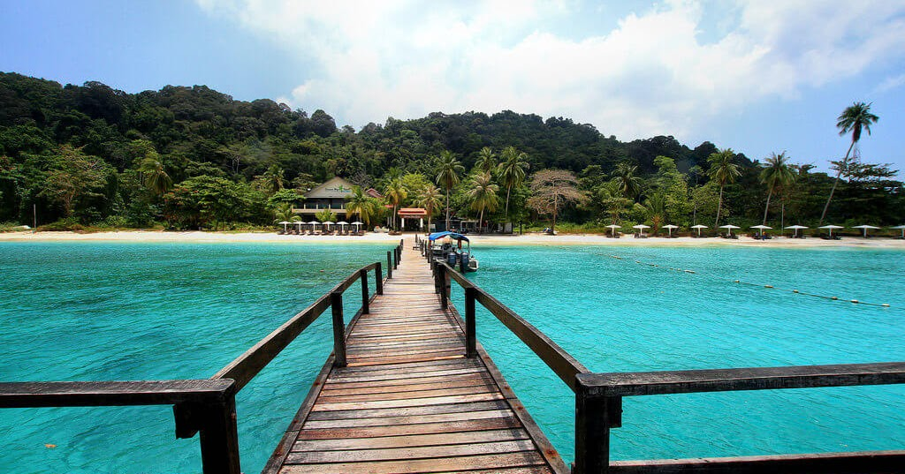

+
WELCOME TO MALAYSIA'S NATURE
Find Your Favorite Destination
 Hot
Hotselling

Kepulauan Perhentian
Trengganu, Malaysia
Kepulauan Perhentian
Kepulauan Perhentian merupakan pulau-pulau yang terletak di Besut District, Malaysia. Aksesnya dimulai dari Kuala Besut yang kemudian dapat dilanjutkan dengan speedboat untuk menyeberang pulau. Kedua pulau utamanya—Pulau Perhentian Besar dan Perhentian Kecil, mampu memanjakan kedua matamu dan memberikan suasana yang tenang. Ketika perahumu mendekati pesisir pantai, kamu akan dihadapkan dengan bukit hijau yang membentang serta air pantainya yang jernih dan berwarna biru terang.
Alamat :Long Beach, Pulau Perhentian Kecil, Terengganu, Malaysia, 22300
Back

Batu Caves
Selangor, Malaysia
Batu Caves
Tempat wisata Malaysia terfavorit ini sebenarnya merupakan tempat suci bagi umat Hindu. Di depan Batu caves, kamu akan disambut dengan patung dewa Hindu degan ukuran yang sangat tinggi yaitu 43 meter serta kuil-kuil umat Hindu. Memasuki kawasan gua, kamu akan mendapati cukup banyak monyet berkeliaran. Selain itu, gua tersebut juga menjadi hunian para kelelawar.
Alamat : Gombak, 68100 Batu Caves, Selangor, Malaysia.
Back
Bako National Park
Sarawak, Malaysia
Bako National Park
Taman Nasional Bako merupalan taman nasional tertua di Sarawak yang diresmikan pada tahun 1957.Taman nasional ini merupakan habitat bagi beragam spesies, di antaranya kera ekor panjang, monyet daun keperakan, tupai pisang raja, babi hutan, kancil, kadal, berang-berang. Selain itu ada banyak spesies burung misalnya sunda scoop owl, bangau billed kingfisher, white bellied woodpecker, mangrove blue flycatcher, hingga red crowned barbet.
Alamat : Kuching, Sarawak, Malaysia
Back
Kiulu River
Sabah, Malaysia
Kiulu River
Terletak di bagian barat laut Sabah di sebuah desa kecil bernama Kiulu, cocok untuk pemula yang lebih menyukai petualangan arung jeram ringan sambil menikmati pemandangan yang indah. Ekskursi mencakup hingga 15km, menjadikannya perjalanan arung jeram menyenangkan. Perjalanan akan memakan waktu sekitar 1 - 2 jam arung jeram sebelum mencapai titik akhir di mana Anda akan disambut oleh BBQ. Mulailah pertualangan rafting anda di Sabah dan taklukan arus di Kiulu River
Alamat : Kiulu, Tamparuli, Sabah, Malaysia
Back
Cameron Highlands
Pahang, Malaysia
Cameron Highlands
Cameron Highlands memiliki pesona alam pegunungan dengan keindahan yang luar biasa. Di sini Anda dapat mendaki Gunung Brinchang, yaitu salah satu gunung tertinggi di Malaysia dengan ketinggian 6.666 kaki di atas permukaan laut. Di puncak Gunung Brinchang. Mata anda akan dimanjakan dengan pemandangan alam dari perbukitan teh hijau Cameron Highlands. Selain itu, tidak jauh dari menara observasi tersebut, Anda dapat berkunjung ke stasiun televisi dan stasiun radio lokal.
Alamat : Pahang, Malaysia.
Back
Killim Geoforest
Kedah, Malaysia
Killim Geoforest
Kilim Geoforest Park merupakan tempat di mana anda akan dibawa melihat keindahan alam dengan menaiki bot. Geopark merujuk kepada lokasi-lokasi yang diiktiraf oleh UNIESCO yang mempunyai keunikan geologi tertentu termasuk gunung, batu-batan, sungai, paya bakau, gua, tasik, haiwan liar dan sebagainya.
Alamat : Kilim River Tourism Jetty, Mukim Kampung Kilim, 07000 Langkawi, Kedah, Malaysia
Back
.jpg)
Pulau Mantanani
Kota Belud Sabah, Malaysia
Pulau Mantanani
Pulau Mantanani Besar (Big Mantanani Island) berbentuk seperti pisau, memiliki pantai yang membentang hingga 2.500 meter. Pulau ini menjanjikan pemandangan kehidupan laut yang paling beragam dengan jarak pandang hingga 40 meter. Banyak spesies pari berkeliaran seperti pari bintik biru dan pari marbled. Pemandangan bawah laut juga dihiasi dengan bangkai kapal dan makhluk-makhluk laut yang menghuni sekitarannya.Dengan pemandangannya yang indah, angin sepoi-sepoi yang sejuk, dan lingkungannya yang tenang.
Alamat : Kampung Mantanani, Pulau Mantanani, Kota Belud Sabah, Malaysia
Back
Genting Highlands
Pahang, Malaysia
Genting Highlands
Genting Highlands adalah tempat wisata yang terkenal di Malaysia, bisa disebut dengan Las Vegasnya Malaysia. Genting Highlands berada di daerah pegunungan yang tinggi dengan begitu suhu udara di sini cukup dingin jadi Anda bisa melakukan kegiatan outdoor tanpa merasa khawatir merasa kepanasan. Lokasi Genting Highlands ini mirip dengan Lembang atau Puncak. Sementara anak-anak Anda menikmati wahana bermain di taman bermain yang ada di sini. Terdapat beberapa obyek wisata di sekitar Genting Highlands, diantaranya Genting Highlands Theme Park, Chin Swee Cave Temple, Genting Stawberry Leisure Farm, dan masih banyak lagi
Genting Highlands, 69000 Genting Highlands, Pahang, Malaysia.
Back
Kinabalu
Taman Nasional Kinabalu adalah taman nasional di Malaysia dan merupakan Situs Warisan Dunia pertama Malaysia. Terletak di pantai barat Sabah, Malaysia timur di pulau Borneo. Dengan area seluas 754 kilometer persegi, Taman Nasional Kinabalu akan memberi Anda pemandangan alam luar biasa dengan suasana pegunungan, tanaman dan tumbuhan eksotis, burung, dan serangga di sepanjang jalan kanopi yang berada di ketinggian puncak pohon.
Alamat : Ranau, Sabah, Malaysia
Back
Pulau Rawa Island
Johor, Malaysia
Pulau Rawa Island
Rawa adalah sebuah pulau yang terletak 16 kilometer dari pantai timur Malaysia. Dikelilingi oleh air jernih dengan warna kebiruan yang menyenangkan dan menawarkan banyak vegetasi hijau yang mengelilingi tebing.
Alamat : Mersing, Johor, Malaysia
Back
Gunung Lambak
Johor, Malaysia
Gunung Lambak
Gunung Lambak adalah gunung kecil di Distrik Kluang, Johor, Malaysia. Puncaknya adalah 510 m di atas permukaan laut. Gunung Lambak adalah Hausberg dari Kluang.
Alamat : Kluang, Johor, Malaysia
Back
Pulau Penang
Pulau Pinang, Malaysia
Pulau Penang
Penang adalah sebuah area dengan keragaman budaya yang paling mencolok dan menarik di Malaysia. Di kawasan ini, pelancong bisa mengunjungi banyak lokasi wisata yang ramai pengunjung, seperti Zona Situs Warisan Sejarah UNESCO & Jalan Armenian (kawasan bersejarah di pusat kota Georgetown), Kuil Kek Lok Si, Tropical Spice Gardens, Penang Botanic Gardens, dan masih banyak lagi. Selain itu, turis juga bisa mengunjungi beberapa pusat perbelanjaan modern, pasar malam, atau pasar loak untuk pengalaman berbelanja yang menyenangkan.
Alamat: Pulau Pinang, Malaysia
Back

Sky Mirror Beach
Selengor, Malaysia
Sky Mirror Beach
Dinamakan berdasarkan pantulan langit yang seperti cermin, tempat ini pernah menjadi salah satu rahasia terbaik Kuala Selangor, tempat yang hanya diketahui oleh penduduk desa nelayan setempat. 'Pulau' misterius ini hanya muncul beberapa hari setiap bulan, dan hanya beberapa jam setiap hari. The Sky Mirror sebenarnya adalah dasar laut yang muncul di atas air saat air surut, memperlihatkan dataran pasir luas yang kira-kira seukuran seratus lapangan sepak bola! Anda akan dimanjakan dengan pemandangan langit dan laut yang tak tertandingi selama saat-saat air surut yang berharga ini.
Alamat : Jalan Sultan Mahmud, 45000 Kuala Selangor, Selangor, Malaysia
Back

Habitat Penang Hill
Pulau Pinang, Malaysia
Habitat Penang Hill
The Habitat Penang Hill adalah pusat penemuan hutan hujan kelas dunia yang terletak di tepi hutan hujan megah yang mudah dijangkau dari kota metropolis Penang. Ini adalah salah satu atraksi utama yang dapat diakses dari Ayer Itam menggunakan kereta api funicular yang bersejarah. Dengan jejak alamnya, jalan setapak di puncak pohon yang ikonik, dan jembatan kanopi yang memberikan pengalaman hutan hujan yang luar biasa, The Habitat bercita-cita untuk membangkitkan rasa ingin tahu dan memelihara dukungan untuk konservasi di antara ribuan pengunjung yang diterimanya setiap tahun.
Alamat : Jalan Stesen, Bukit Bendera Air Itam, 11500 George Town, Pulau Pinang, Malaysia.
Back
Tanjung Piai
Johor, Malaysia
Tanjung Piai
Tanjung Piai adalah sebuah tanjung di Pontian, Johor, Malaysia yang merupakan titik paling selatan di Semenanjung Malaysia dan juga Asia daratan. Di Tanjung Piai terdapat restoran dan hutan bakau.Tanjung Piai adalah rumah bagi sekitar 20 spesies tanaman bakau yang berbeda. Ada juga beberapa satwa liar disana seperti kera, kepiting bakau dan berbagai jenis burung.
Alamat : Taman Negara Johor Tanjung Piai Mukim, 82030 Kukup, Johor, Malaysia
Back